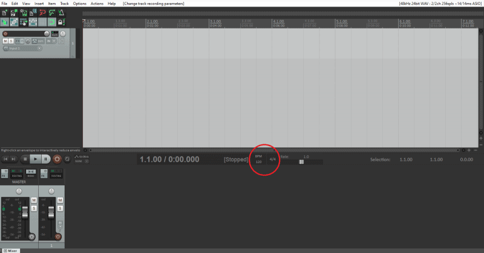
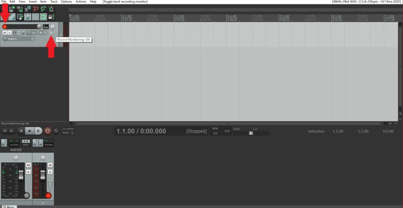
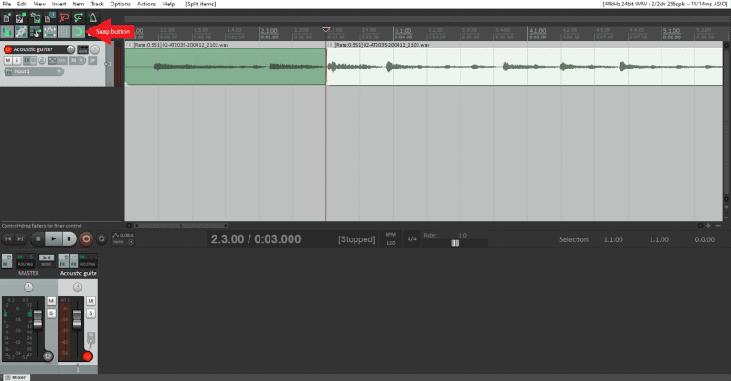
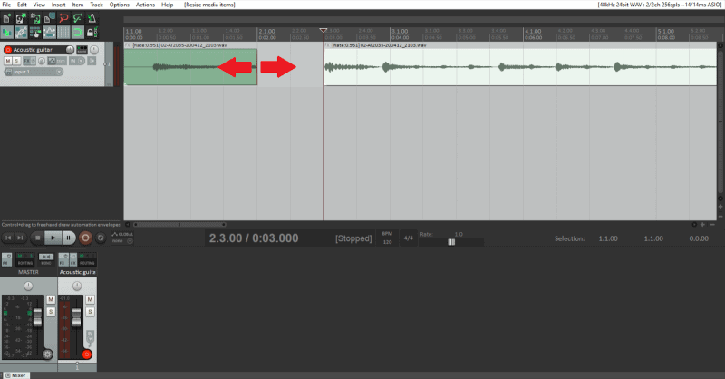
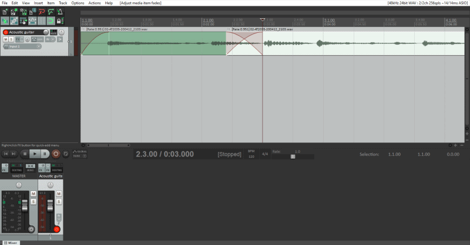

First step, setting the BPM and time signature, which is at the top of the mixer.

Click on the BPM box to type in the desired tempo.
Next to that, is the time signature box. Click it to change the signature.
Next, we enable the track for recording. To do this go to your track and hit the dark red circle. It will turn on, indicating that its ready for recording.
Click on the megaphone on the track to enable record monitoring.

You'll also see an M and S under the red circle, these mean mute and solo buttons.
Once you record your audio, you might need to loop it to fit the entire song length.
To loop a section:
After recording your first track, its time to edit it.
To cut or split an item, simply click on the spot you want to make a split.
Your cursor will snap to the grid, you can turn this on or off using Alt+S.
To make the split just hit S or right-click and choose "Split items at cursor".

If you don't want to do that, you can also drag the edge of the item forward or backward to remove that part of the item.
This doesn't get rid of the item, so if you did it by mistake, you can just re-drag the item back.

You can also stretch an item, which speeds up or slows down the audio.
Hover on the edge of an item, press and hold Alt, and click and drag the edge.(Note: this will diminish the quality of the audio.)
Nudging is another useful feature that REAPER has. This is used for shifting items exactly where you want them to go.
Just click on the item, hold Shift and press left or right arrows. This will nudge the item slightly left or right.
If it isn't as accurate as you would like, you can always zoom by scrolling up or down with your mouse wheel.
Another basic feature is crossfading.
When you drag an item over another it will automatically apply crossfade. You can also manually adjust this crossfade.
Hover over the top corner of the items overlapping each other. Click and drag to change the crossfades length.
This is also how you fade an item in or out.

You can also highlight multiple items over multiple tracks. There are a few ways to do this.